Building standards
Follow all the rules below. Your room needs to meet them before it can be added to the game.
Basics
Grid & Alignment
- All positions and scales must be multiples of 0.125 studs. (…0.125, 0.25, 0.5, 1.0, etc.)
- Don’t use off-grid values like
0.373unless the prop’s instructions specifically allow it. - Place pivots at the center or bottom of assets, wherever makes sense for the asset.
- Avoid z-fighting. Fix the geometry instead of nudging parts until they look right.
When “off-grid” is allowed
- Decor only: you can slightly rotate or offset furniture to make a room feel less repetitive.
- Keep all structure on-grid: walls, floors, ceilings, trims, pillars, and door/window frames.
Room Basics
Start & Exit orientation
- Start part faces outside of the main room.
- Exit part faces inside of the main room.
- Keep both on-grid and flush with the door thresholds, with no small gaps.
RoomEntity_SpawnNode
- Required in every room.
- Place it in front of Start or near the center of the room, with nothing blocking it.
- Leave a clear 2x2x2-stud space around it. Keep other parts out of that space.
Waypoints
- Add a folder named
Waypointsdirectly inside the room model. - You only need waypoints if there’s no clear line of sight between Start and Exit.
- Inside
Waypoints, add one folder per exit:1,2, … - Put waypoint parts in order inside each subfolder. Use clear names or numbers.
Room Model
└─ Waypoints
├─ 1
│ ├─ WP1
│ └─ WP2
└─ 2
└─ WP2Full Video Example
Folders
Folder setup
Room Model
├─ Assets - structure: Walls, Floor, Ceiling, Windows/Frames
├─ Furniture - anything with a Part named "Primary" inside the model
├─ Lights - all light sources (bulbs, sconces, strips)
├─ RoomHitbox - convex/union set that fully contains the room
├─ Scriptables - gates, triggers, interactions
├─ Waypoints - path folders (1, 2, ...)
├─ RoomModule - ModuleScript: enter/exit hooks (remove if unused)
├─ Start - entry locator (faces in)
├─ Exit - exit locator (faces out)
└─ RoomEntity_SpawnNode- Don’t rename these folders or objects.
- You can add subfolders inside
Assets. Keep them simple and easy to follow.
Furniture rule
- Any model with a
PartnamedPrimarycounts as Furniture. Put it in theFurniturefolder. - Use the Multitool to turn regular models into Furniture models.
Lighting
Place light prefabs where they look best, while following these rules.
What you can change
- Don’t change light colors or any internal parts, materials, or names. The game replaces these lights when it runs. Changing them will break the lighting and make the room look wrong.
- You can move, rotate, and duplicate lights. Don’t scale, recolor, re-mesh, or re-parent them, or change their PrimaryPart.
- All light models live in the room's
Lightsfolder.
General placement
- Start with 20 studs between light bulbs, then adjust the spacing to suit the room.
- Place
LightBulb (main)/RoofLightabout 3.5 studs below the finished ceiling. - Center wall lights (
WallLight,MetalWallLight, lanterns) on panels or pillars. Keep their tops level along a corridor. - Use other lights (
HugeLight,TowerLight,Floodlight_Stand) to highlight areas or fill darker spots. Don’t crowd them together.
What goes where
Good Everywhere
- TowerLight
- Floodlight_Stand
- HugeLight
- GardenLantern
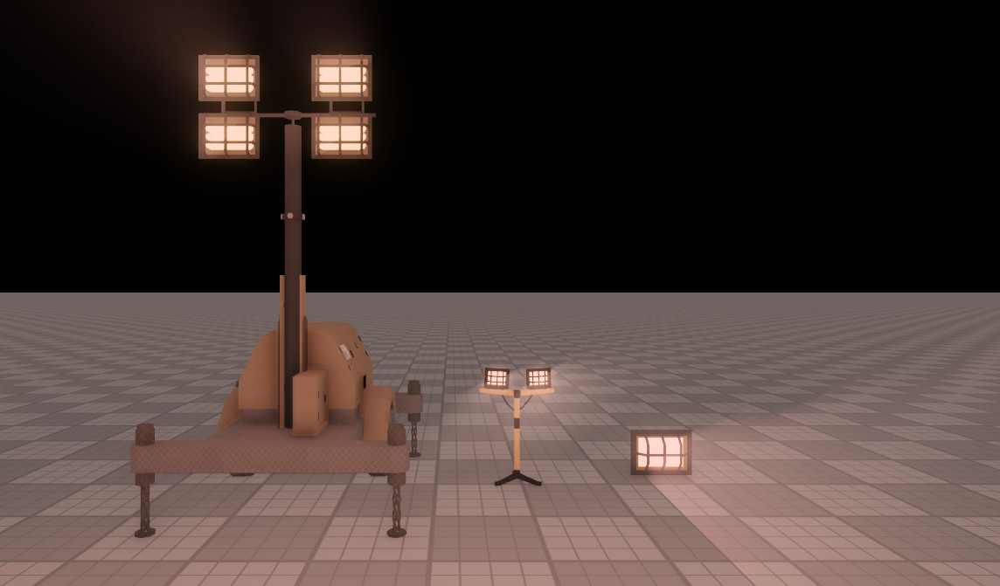
The Lab
- LightBulb
- RoofLight
- WallLight
- MetalWallLight
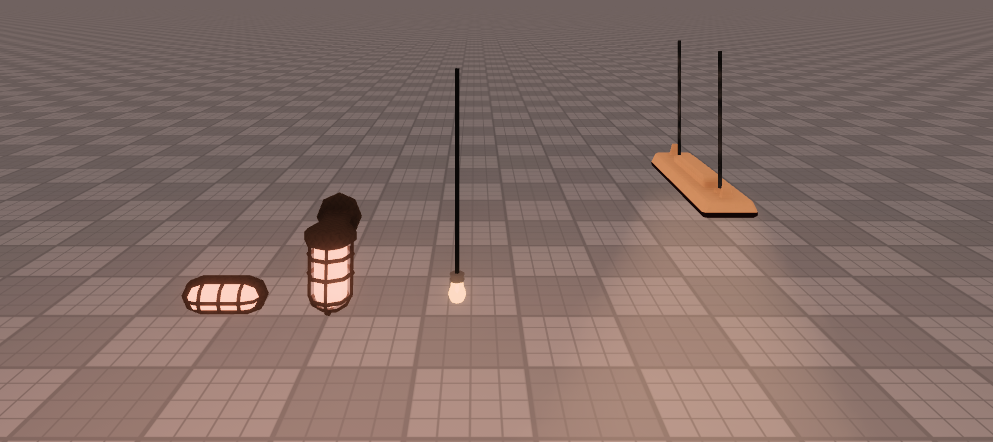
True Lab
- LongLight
- TrueLabWallLight
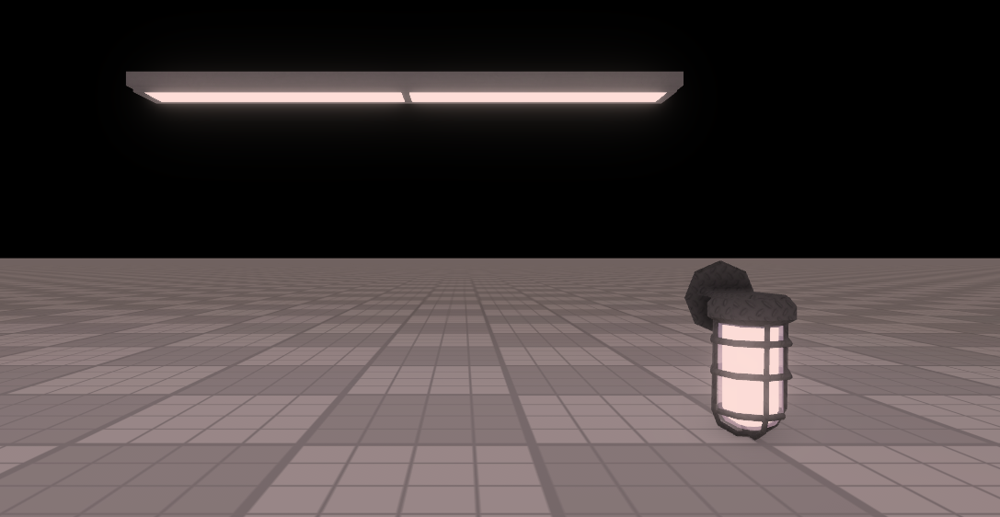
Cave Sections
- CableMinelight
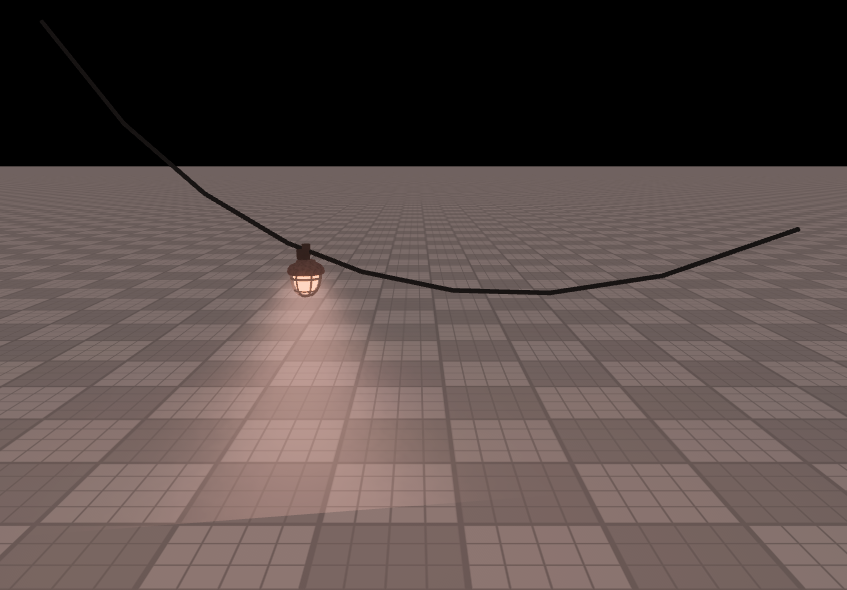
Sewer
- WorkLightSewer
- SewerLight
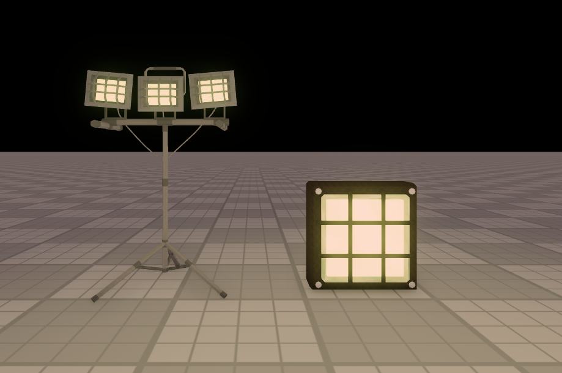
Outside
- GardenLantern
- WallLantern
- SwayingLantern
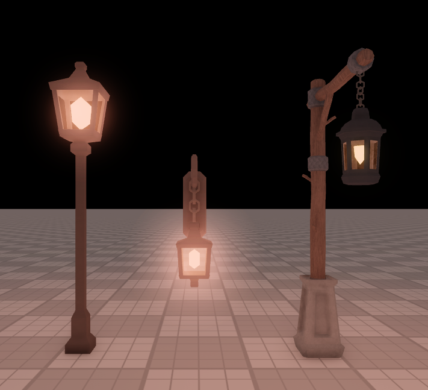
Chase Rooms
- Alarm
- TinyAlarm
- LightBulb
- RoofLight
- WallLight
- MetalWallLight
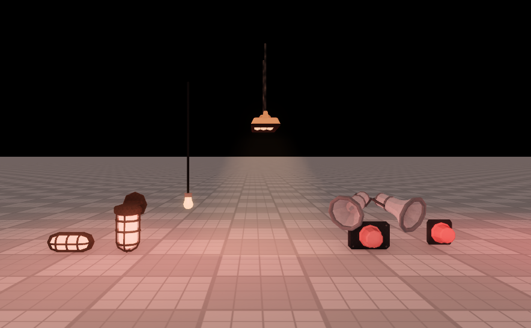
Usage
| Light | Indoors | TrueLab | Cave | Sewer | Outside | Chase |
|---|---|---|---|---|---|---|
| LightBulb | ✓ | ✓ | ||||
| RoofLight | ✓ | ✓ | ||||
| WallLight | ✓ | ✓ | ||||
| MetalWallLight | ✓ | ✓ | ||||
| LongLight | ✓ | |||||
| TrueLabWallLight | ✓ | |||||
| CableMinelight | ✓ | |||||
| WorkLightSewer | ✓ | |||||
| SewerLight | ✓ | |||||
| GardenLantern | ✓ | |||||
| WallLantern | ✓ | |||||
| SwayingLantern | ✓ | |||||
| TowerLight | ✓ | ✓ | ✓ | ✓ | ✓ | ✓ |
| Floodlight_Stand | ✓ | ✓ | ✓ | ✓ | ✓ | ✓ |
| HugeLight | ✓ | ✓ | ✓ | ✓ | ✓ | ✓ |
| Alarm | ✓ | |||||
| TinyAlarm | ✓ |
If a light suits an area but isn’t listed for it, ask first. I can add it to the allowed light types.
Walls
Using templates, matching wall widths, and getting the height right.
Floor plan grid (15-stud rooms)
Do
- Build floor plans in 10-stud steps (10, 20, 30, and so on).
- Build the room from whole 10x10 cells.

Don't
- Use sizes like 42 or 100 studs. They break the pillar and wall spacing.
- Guess the size instead of snapping to 10-stud steps.
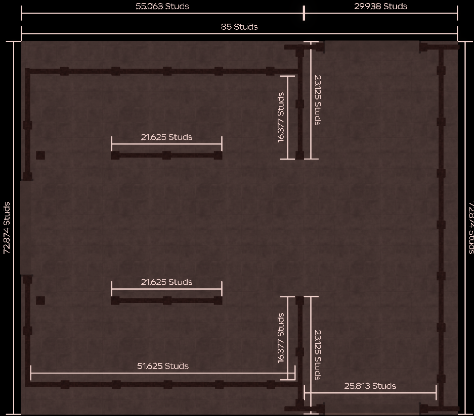
Centered entrances: equal left/right walls
- When an Entrance/Exit inset is centered on a longer wall, keep the wall sections on either side the same width.
- Example: if the right segment to the next corner/wall break is
10studs, the left segment must also be10studs.
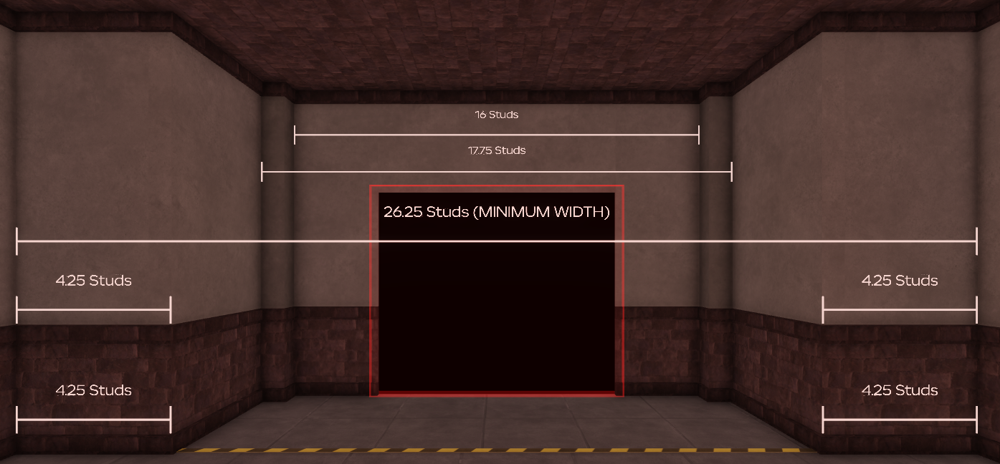
Floors
- Use 13.75 studs as the default floor-to-ceiling height. Beyond that, add another floor unless there’s an exception. Never make the floor-to-ceiling height less than 13.75 studs.
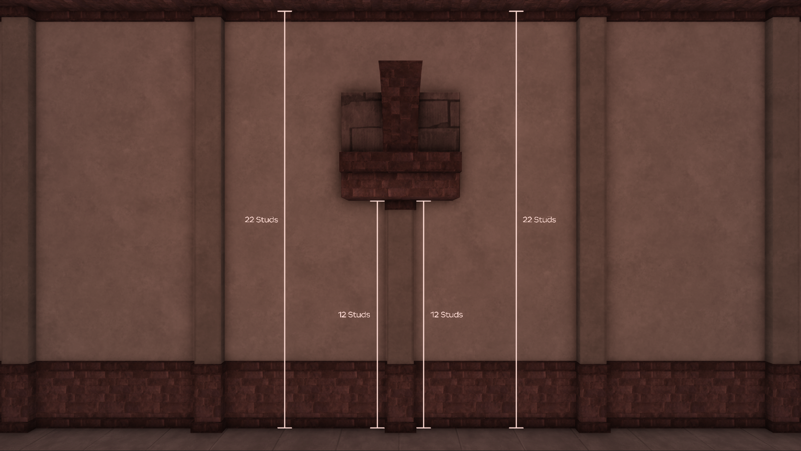
Taller walls
- For taller walls, scale only the main wall panel upward (Y). Don’t duplicate the baseboard.
- Two-floor rooms only: give each floor its own baseboard at that floor’s height, running around the whole room.
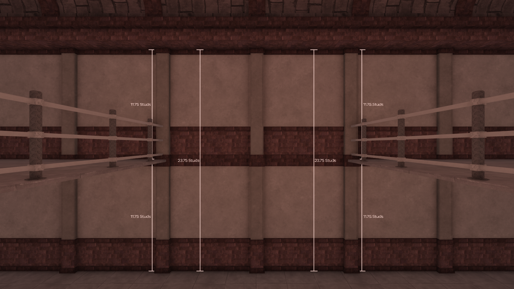
Meet the floor exactly
- Line walls up exactly with the floor’s edges. Don’t leave floor sticking out beyond the walls.
- You can use one large floor part for a set of rooms. Keep the walls lined up with its edges.
Pillars
How far to place pillars from walls and corners.
Spacing
- Keep exactly
10studs between pillars. Don’t move them closer together or farther apart. - This applies to every pillar. If the last one follows the 10-stud spacing but doesn’t line up with the corner, adjust the floor and walls to make it fit.
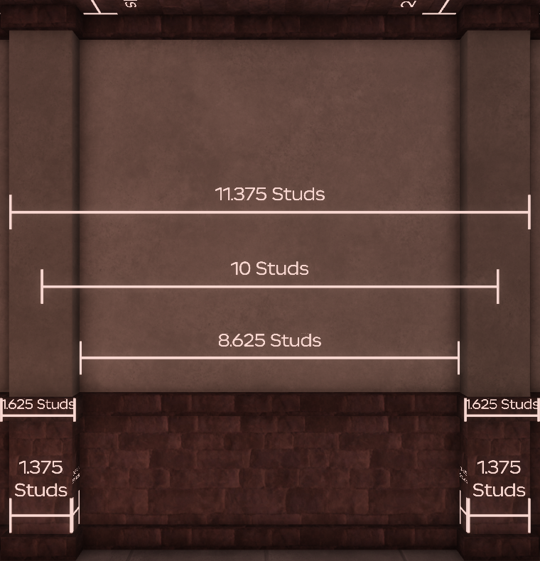
Offset from a straight wall
- Place each pillar exactly
0.375studs from the wall. Corners use the separate rule below. - Measure from the pillar's closest face to the wall's face.
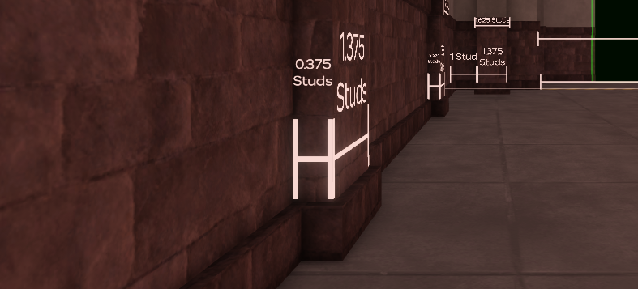
Pillars in corners
- Place corner pillars 1.375 studs from each wall (X and Z), or directly against the walls. If they touch the walls, use the main pillar part as the contact point, not the top or bottom trim.
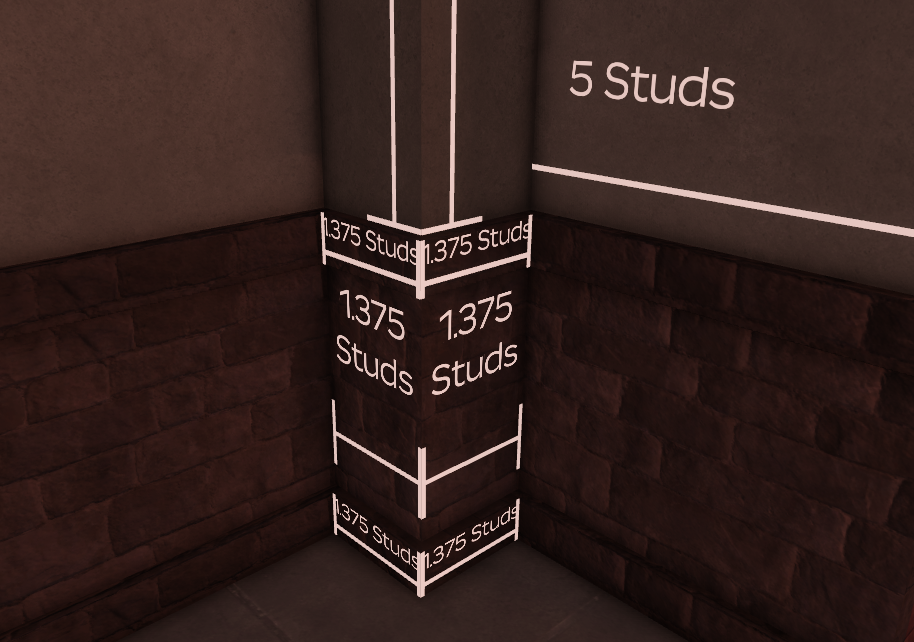
Ceiling Pillars
The darker ribs that run across the ceiling.
Rules
- Center ceiling pillars on the wall pillars and keep them on-grid. If the wall pillars are spaced every 10 studs, use the same spacing for the ceiling pillars.
- The center of each ceiling pillar must line up with the center of the wall pillar.
- Run ceiling pillars all the way to a wall or another ceiling pillar. Don’t leave half pillars ending in open space.
- Hang lights on the ceiling pillars, never inside them or on the plain ceiling.
Small rooms
- Run ribs across the room at a right angle to its longer side, spaced every 10 studs.
- Run each rib from the center of one wall pillar to the center of the opposite wall pillar.
- Keep the same rib spacing and width across the room so the ceiling pattern stays even.
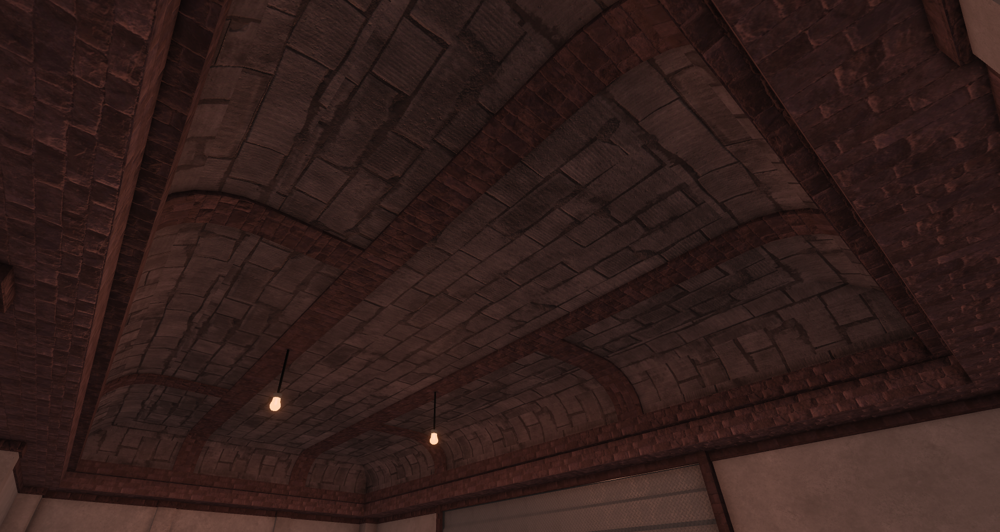
Turns / L-shapes
- Keep the same 10-stud spacing around bends. Run the main rib along the center of the room, with ribs branching out to the inner and outer walls.
- Use smooth curves with no sharp kinks. Keep the ends lined up with the centers of the wall pillars.
- Don’t squeeze the ribs together on the inside of a turn. Keep the same number of spaces and even spacing around the curve.
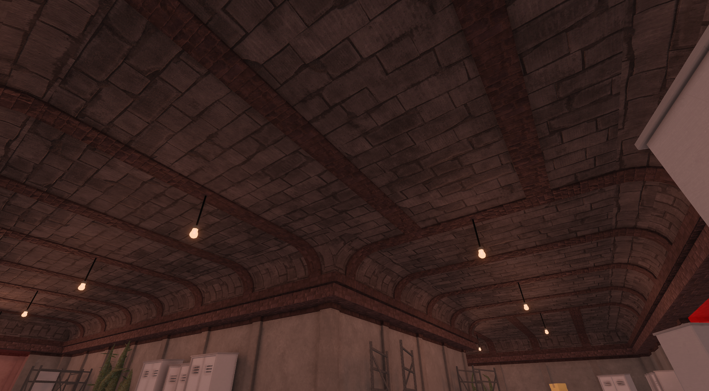
Ceiling
Sizes for the outside band and roof topper.
Heights & parts
- Outside ceiling wall/band:
2.875studs - Ceiling roof “topper”:
0.875studs - Total ceiling thickness:
3.75studs (2.875 + 0.875)
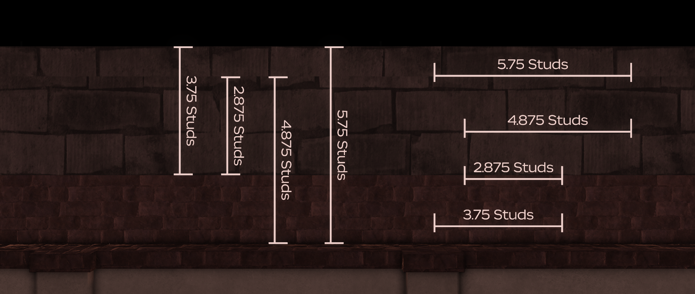
Alignment
- Run the ceiling band around the whole room. It must meet the walls cleanly, with no gaps or overhangs.
- Place ribs every 10 studs, measured center-to-center, directly above the centers of the wall pillars.
- Keep the same materials and heights. If you need an exception, ask first.
RoomModule
When to include it
- Include it only if the room needs logic, such as gates, events, or VFX.
- If you’re not using it, remove the ModuleScript.
Template code
local RoomModule = {}
local Room : Instance = script.Parent
function RoomModule.Start()
-- Code Here
end
return RoomModule
No matching sections. Try a different search.